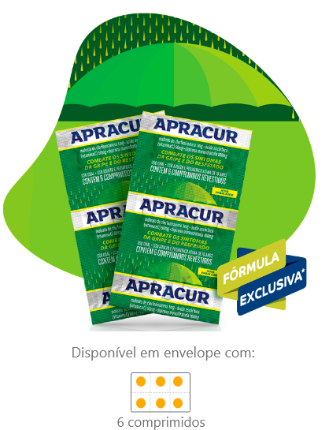
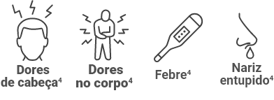
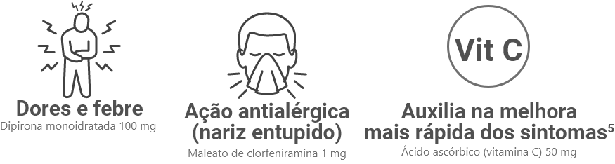
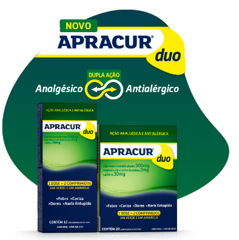

Derruba os sintomas da
gripe sem derrubar você!
Sua fórmula contém vitamina C, que auxilia na melhora mais rápida dos sintomas da gripe e do resfriado5.
ALÍVIO DOS SINTOMAS:


Formulação4:

Posologia4:
Quer saber mais sobre o produto?

Agora também derruba
Os sintomas da alergia!
Com dupla ação analgésica e antialérgica, além de tratar os sintomas de gripes e resfriados, Apracur Duo trata também os
sintomas da alergia!¹